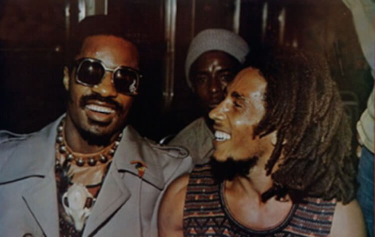
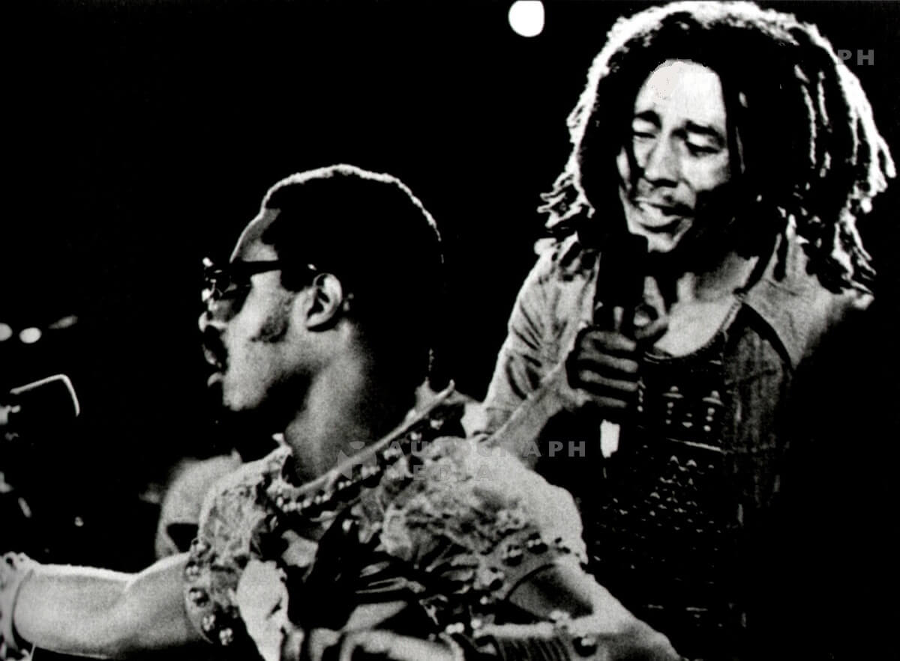

The Beatles, Ray Charles, Marvin Gaye ... and how not Bob Marley. For a lover of music, as Stevie Wonder is, falling prey to new expressions and musical forms was predictable and inevitable. The world had discovered in the mid-70's a new style that came from Jamaica with African influences, the Reggae. A new way of understanding the music that evolved from the evolution of ska and rocksteady in the Jamaica of the 60's. In a cheerful, repetitive and marked rhythm, their melodies were soft, without stridencies, giving great importance to lyrics committed in Favor of peace and aid to the Third World.

Highly identified by the movement and ideology Rastafaris, it was the perfect channel for the American and European black people to channel their needs. Stevie Wonder -who during this decade of the 70's became fully involved in denouncing social injustices, while reflecting the perceived society- shared poster along with Bob Marley and the original members of The Wailers at the Wonder Dream Concert which took place at the Kingston National Stadium on October 4, 1975. There about thirty songs and thousands of people were witnessed a unique event, with the generous donation of the total proceeds to the Jamaica Institute of the Blind.

Years later, at the festival “
Black Music Association” that took place at the Sheraton Philadelphia in 1979, again the symbiosis between the two musicians on stage playing "Get up, Stand up" was total. This was the seed that came one year after the birth of one of Stevie Wonder's many iconic songs, "
Master Blaster (Jammin ')".
The song of clear influence Reggae, fresh air painted Motown outdoors of the hand of Stevie Wonder, and was all the homage to his friend Bob Marley that fought against the cancer that detected to him years ago. The song was part of the album
Hotter Than July of the year 1980, reaching great popularity in the whole world. Bob Marley died a few months later, on May 11, 1981.
Other of these points of union between both is the song “
Redemption Song”. Composed by Bob Marley in 1979, already aware of the cancer he possessed, his mood was one of deep depression and sadness. Remote of the characteristic Reggae style, initially it only was recorded with the guitar and his voice, being later edited with the voice of Bob and instrumentalized by The Wailers. He expressed the ideals of the Rastafarian movement and the liberation of the people from their own mental impositions. Stevie Wonder performs a fantastic version of a clearer style of ballads, replaces the acoustic guitar with a cozy electric, and incorporates percussions and new sounds. Included in a 1996 compilation called
Song Review: Greatest Hits.
Two legends of music, two free spirits, two geniuses of the rhythms ..., two friends who processed mutual admiration for what they shared; Music, love, peace and freedom. The chemistry that existed between them We did could not again to contemplate, Since Bob Marley's disease, prevented the joint tour that they planned to realize at the end of 1980.But with us, always will remain the positive posion of his passage by our planet in the form of a philosophy Of life, and songs that well under his creation, or by his inspiration, have helped to the creation of a better world.
Lyrics Master Blaster (Jammin')
Everyone's feeling pretty
It's hotter than July
Though the world's full of problems
They couldn't touch us even if they tried
From the park I hear rhythms
Marley's hot on the box
Tonight there will be a party
On the corner at the end of the block
Didn't know you
Would be jammin' until the break of dawn
I bet nobody ever told you that you
would be jammin' until the break of dawn
You would be jammin' and jammin' and jammin', jam on
They want us to join their fighting
But our answer today
Is to let all our worries
Like the breeze through our fingers slip away
Peace has come to Zimbabwe
Third World's right on the one
Now's the time for celebration
'Cause we've only just begun
Didn't know that you
Would be jammin' until the break of dawn
Bet you nobody ever told you that you
Would be jammin' until the break of dawn
You would be jammin' and jammin' and jammin', jam on
Bet you nobody ever told you that you
(We're in the middle of the makin's of the master blaster jammin')
Would be jammin' until the break of dawn
I know nobody told you that you
(We're in the middle of the makin's of the master blaster jammin')
Would be jammin' until the break of dawn
We're jammin', jammin', jammin', jam on
You ask me am I happy
Well as matter of fact
I can say that I'm ecstatic
'Cause we all just made a pact
We've agreed to get together
Joined as children in Jah
When you're moving in the positive
Your destination is the brightest star
You didn't know that you
(We're in the middle of the makin's of the master blaster jammin')
Would be jammin' until the break of dawn
I bet you nobody ever told you that you
(We're in the middle of the makin's of the master blaster jammin')
Would be jammin' until the break of dawn
Oh, Oh, Oh, Oh, Oh, you
(We're in the middle of the makin's of the master blaster jammin')
Would be jammin' until the break of dawn
Don't you stop the music, oh no,
(We're in the middle of the makin's of the master blaster jammin')
Na, na na...
(We're in the middle of the makin's of the master blaster jammin')
Nobody told you Oh, Oh, Oh, you
(We're in the middle of the makin's of the master blaster jammin')
Would be jammin' until the break of dawn
I bet you if someone approached you
(We're in the middle of the makin's of the master blaster jammin')
yesterday to tell you that you would be jammin' you would not believe
it because you never thought that you would be jammin'
Oh, Oh, Oh, Oh,
(We're in the middle of the makin's of the master blaster jammin')
jammin' 'til the break of dawn
Oh, Oh, Oh, You may as well believe what you are feeling
(We're in the middle of the makin's of the master blaster jammin')
because you feel your body jammin'
(We're in the middle of the makin's of the master blaster jammin')
Oh, Oh, you would be jammin' until the break of dawn
(We're in the middle of the makin's of the master blaster jammin')
(We're in the middle of the makin's of the master blaster jammin')
Lyrics Redemption Song
Old pirates, yes, they rob I;
Sold I to the merchant ships--
Minutes after they took I
From the bottomless pit.
But my hand was made strong
By the 'and of the Almighty.
We fought in this generation
Triumphantly.
Won't you help to sing
These songs of freedom? --
'Cause all I ever have:
Redemption songs
Redemption songs.
Emancipate yourselves from mental slavery;
None but ourselves can free our minds.
Have no fear for atomic energy,
'Cause none of them can stop the time.
How long shall they kill our prophets,
While we stand aside and look? Oooh!
Some say it's just a part of it:
We've got to fulfill the book.
Won't you help to sing
These songs of freedom? -
'Cause all I ever have:
Redemption song
Redemption song
Redemption song.
EMANCIPATE yourselves from mental slavery;
None but ourselves can free our mind.
WoAH! Have no fear for atomic energy,
'Cause none of them-a can-a stop-a the time.
How long shall they kill our prophets,
While we stand aside and look?
Yes, some say it's just a part of it:
We've got to fulfill the book.
Won't you help to sing
These songs of freedom? --
'Cause all I ever had:
Redemption songs --
All I ever had:
Redemption songs...
These songs of freedom,
Songs of freedom.
Home |
Biography |
Discography |
Videos |
Songs |
Grammys |
Top ten
steviewonder.es ® is a registered trademark. All content © 2008-2022 by izugarria.
All contents of the site including, images, video, names, trademarks & logos, are property of their respective owners.